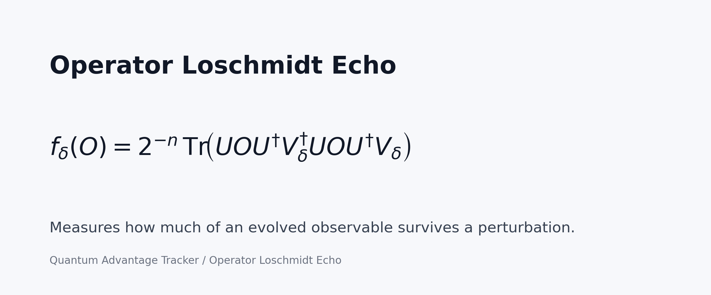
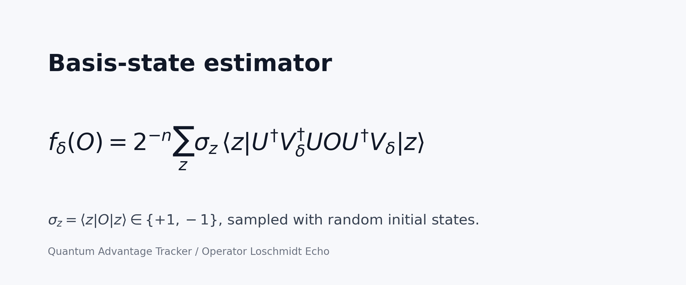
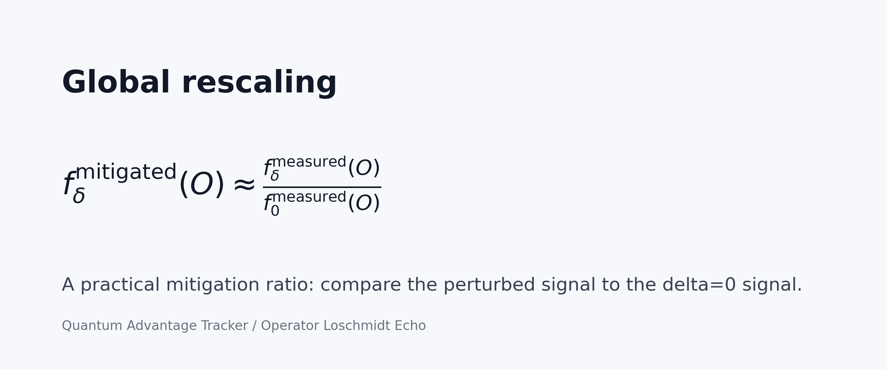

Run It Locally
python -m venv .venv
source .venv/bin/activate
pip install -r requirements.txt
python scripts/qiskit_statevector_runner.py
python scripts/tn_mps_runner.py --shots 20000Expected local statevector result:
global-rescale ratio: 0.969064735901The first script is an exact Qiskit statevector calculation. The second uses Qiskit Aer with a matrix-product-state simulator and sampled measurement counts, so it should land close to the same value with small shot noise.
49Q QASM
The repo also includes the public 49Q OpenQASM 3.0 circuit for
operator_loschmidt_echo_49x648:
49Q_OLE_circuit_L_3_b_0.25_delta0.15.qasm.
It declares 156 physical-register qubits, has 49 active non-barrier
qubits, depth 149, and 648 CZ gates.
49Q Kingston Runner
The optional 49Q runner is configured like the small-budget Kingston experiment that produced the 0.2094 estimate: fixed Kingston layout, 21x251 shots, DD XY4, active Pauli twirling, and global rescaling. It does not use readout mitigation, ZNE, or postselection.
Note: readout mitigation and ZNE were tested later as a two-string A/B diagnostic, not as the source of the 0.2094 N_int=8 aggregate.
python scripts/run_49q_kingston_small_budget.py
python scripts/run_49q_kingston_small_budget.py --execute --sample-count 1The first command is a dry run. The second submits real IBM Runtime jobs and spends quantum budget.
49Q ZNE Spotcheck
Because ZNE was the only mitigation variant that hinted at improvement, one extra uniform string was tested with local folding factors 1, 3, and 5. A separate 3-bit readout calibration was then applied to the same folded-count result. This is a diagnostic on one string, not a new full 49Q aggregate.
| Quantity | Value |
|---|---|
| ZNE job | d7rmj5vljm6s73bah3ig |
| Readout calibration job | d7rmsvkf3ras73b743b0 |
| Uniform string index | 1 |
| Baseline global-rescale ratio | 0.2286591607 |
| Raw ZNE ratio | 0.2834528131 |
| ZNE + full-assignment readout | 0.2969777829 |
| ZNE + local-tensor readout | 0.2964000464 |
| Tensor-readout shift vs baseline | +0.0677408857 |
python scripts/run_49q_zne_spotcheck.py --execute --index 1
python scripts/run_49q_zne_spotcheck.py --execute --readout --input-json results/49q_zne_spotcheck_index1_20260503.jsonCombining the three currently available mitigated strings, indices 0, 1, and 5, gives a diagnostic subset mean of 0.2704104168 for ZNE + local-tensor readout, compared with 0.2190697289 baseline on the same strings. This subset is not an unbiased final estimate; a clean small-budget completion needs the same pipeline on the remaining original indices 2, 3, 4, 6, and 7.
Six-Qubit Reference Results
| Method | Value |
|---|---|
| Local BP-TN BD64 | 0.9602546583 |
| IBM Kingston raw | 0.8828125 |
| IBM Kingston global rescaling + tensor readout | 0.8389109357 |
| IBM Kingston ZNE + readout tensor | 0.9154327081 |
| Local statevector run in this repo | about 0.9690647359 |
Formula Cards
These are the LinkedIn-ready formula images included in the repo.



Full Tracker Context
Public tracker submissions include 49-qubit OLE circuits measured on IBM hardware, for example 49x648 on ibm_boston with value 0.824 and 49x1296 on ibm_pittsburgh with value 0.649. This repo focuses on the six-qubit teaching circuit and includes the 49Q small-budget Kingston result only as context.